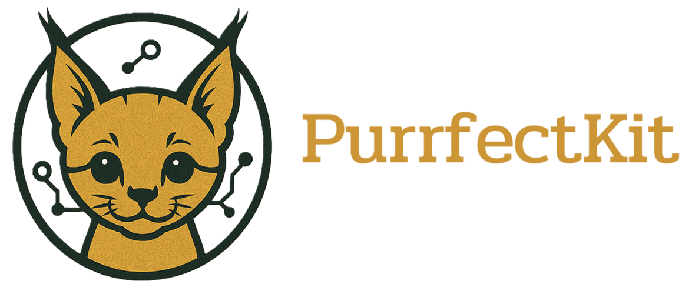

PurrfectKit¶
PurrfectKit is a whimsical Python library that combines feline charm with powerful natural language processing (NLP), optical character recognition (OCR), and document processing. Inspired by the elegance of Thai cat breeds, each module in the purrfectmeow package is named after a unique breed, making text processing, semantic search, and data extraction both fun and efficient.
Contents¶
🐾 Overview¶
PurrfectKit blends NLP, OCR, and document processing with a playful nod to Thai cat breeds. Its core modules are:
Kornja: Segments text into manageable chunks (Content Chunking).
WichienMaat: Interprets query intent for precise results (Semantic Search).
KhaoManee: Converts text to vectors and manages storage (Embedding & Storage).
Malet: Extracts data from PDFs, images, spreadsheets, and Markdown (Text Extraction).
Suphalaks: Handles file operations and model/tokenizer loading (Utility & Infrastructure).
Note
All modules are prefixed with purrfectmeow for namespace clarity and reflect Thai cat breed names.
🌟 Why PurrfectKit?¶
Playful yet Powerful: Combines robust NLP and OCR capabilities with a delightful, cat-inspired interface.
Multilingual Mastery: Built-in support for Thai via
pythainlp, with extensibility for other languages.Developer-Friendly: Intuitive APIs and comprehensive documentation make integration a breeze.
Versatile Applications: Perfect for semantic search, document processing, and retrieval-augmented generation (RAG).
🛠️ System-level Dependencies¶
PurrfectKit relies on the following system-level dependencies for OCR and document processing. Install them based on your operating system:
tesseract-ocr: Core OCR engine for text extraction from images.
tesseract-ocr-tha: Thai language data for Tesseract.
poppler: PDF rendering library for processing PDF documents.
ffmpeg: Multimedia framework for handling image and video inputs.
libmagic1: File type identification library for robust file handling.
Installation on Ubuntu/Debian:
sudo apt-get update
sudo apt-get install tesseract-ocr tesseract-ocr-tha poppler-utils ffmpeg libmagic1
Installation on macOS (using Homebrew):
brew install tesseract tesseract-lang poppler ffmpeg libmagic
Installation on Windows:
tesseract-ocr: Download from https://github.com/UB-Mannheim/tesseract/wiki. Install with Thai language and add Tesseract-OCR folder to PATH.
Poppler: Download from https://github.com/oschwartz10612/poppler-windows/releases/. Extract, and add bin folder to PATH.
FFmpeg: Get a static build from https://ffmpeg.org/download.html, extract, and add bin folder to PATH.
🚀 Installation¶
PurrfectKit requires Python 3.10 to 3.12.4. We recommend using uv for faster dependency management, but pip is also supported.
Using uv (Recommended):
git clone https://github.com/SUWALUTIONS/PurrfectKit.git
cd PurrfectKit
uv sync --extra-index-url https://download.pytorch.org/whl/cpu
Using pip:
git clone https://github.com/SUWALUTIONS/PurrfectKit.git
cd PurrfectKit
pip install . --extra-index-url https://download.pytorch.org/whl/cpu
For development dependencies (e.g., pytest):
uv sync --extra-index-url https://download.pytorch.org/whl/cpu --extra dev
# or
pip install .[dev] --extra-index-url https://download.pytorch.org/whl/cpu
🐱 Quick Start¶
from purrfectmeow import Suphalaks, Malet, Kornja, KhaoManee, WichienMaat
# Load and process a PDF
file_path = "example/meowdy.pdf"
metadata = Suphalaks.get_file_metadata(file_path)
with open(file_path, "rb") as f:
text = Malet.loader(f, file_path, loader="MARKITDOWN")
# Chunk the text
chunks = Kornja.chunking(
text,
splitter="token",
model_name="intfloat/multilingual-e5-large-instruct",
chunk_size=50,
chunk_overlap=0
)
# Create document templates and embeddings
docs = Suphalaks.document_template(chunks, metadata)
embeddings = KhaoManee.get_embeddings(docs, model_name="intfloat/multilingual-e5-large-instruct")
query_embeddings = KhaoManee.get_query_embeddings(query="howdy", model_name="intfloat/multilingual-e5-large-instruct")
# Perform semantic search
results = WichienMaat.get_search(query_embeddings, embeddings, docs, top_k=2)
# Print results
for result in results:
print(f"Score: {result['score']:.4f}")
print(f"Content: {result['document'].page_content}\\n")
Expected Output:
[
{
"score": 0.8146,
"document": {
"metadata": {
"chunk_info": {
"chunk_number": 1,
"chunk_id": "fc690110e8a2407db6b65e7129331ec7",
"chunk_hash": "4b7ffc7f57494fba188f7bc55d348a7c",
"previous_chunk_hash": null,
"next_chunk_hash": "49473745424e819315a4ad8cb2c25fa8",
"chunk_size": 168
},
"source_info": {
"file_name": "meowdy.pdf",
"file_size": 3981724,
"file_created_date": "2025-05-23 09:46:17",
"file_modified_date": "2025-05-23 09:46:17",
"file_extension": ".pdf",
"file_type": "application/pdf",
"description": "PDF document, version 1.7, 1 pages",
"total_pages": 1,
"file_md5": "bf4db19df52cb3a3e4e3854c9edbdc73"
}
},
"page_content": "Meowdy, marvelous makers of machine magic! PurrfectKit. Whether you're chunking, searching, embedding, extracting, or orchestrating, I've got a cat for that"
}
},
...
]
✨ Features¶
NLP: Tokenization, semantic analysis and more with
spacy,pythainlp, andtransformers.OCR: Extract text from images and PDFs using
surya-ocr,easyocr, andpytesseract.Document Processing: Handle PDFs, images, and Markdown with
pymupdf,doclingandmarkitdown.Multilingual Support: Thai language processing via
pythainlp, extensible for other languages.AI & LLMs: Leverage
torchandlangchain-corefor embeddings and RAG workflows.Whimsical Design: Thai cat breed-inspired module names for a delightful developer experience.
📚 Documentation¶
Usage Guide: Step-by-step examples for all modules.
API Reference: Detailed documentation for
purrfectmeowmodules.GitHub Repository: https://github.com/SUWALUTIONS/PurrfectKit
🤝 Contributing¶
We welcome contributions! To get started:
Fork the repository.
Create a branch:
git checkout -b feature/your-feature.Commit changes:
git commit -m "Add your feature".Push and open a pull request.
See CONTRIBUTING for detailed guidelines.
📄 License¶
PurrfectKit is released under the MIT License.